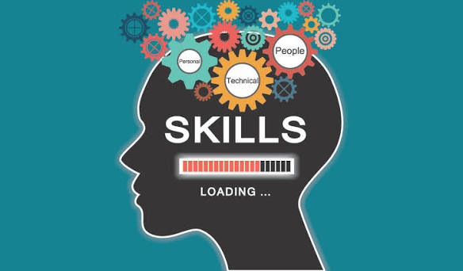

Legal Research and Documentation
I have experience conducting legal research on constitutional amendments, legislative reform, and public policy issues. These skills support my long-term interest in law, corporate legal work, business regulation, and professional legal research.
- Legal research and analysis
- Legislative and constitutional reform research
- Legal document preparation
- Policy and legal report writing